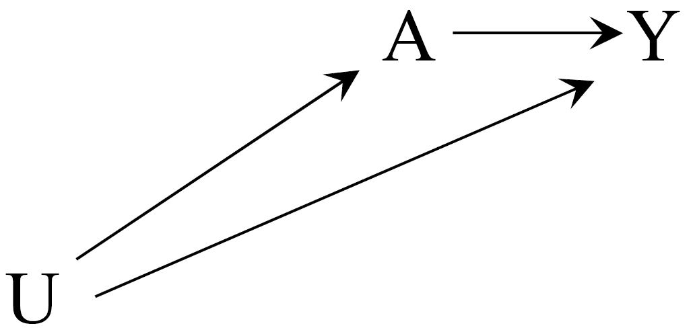
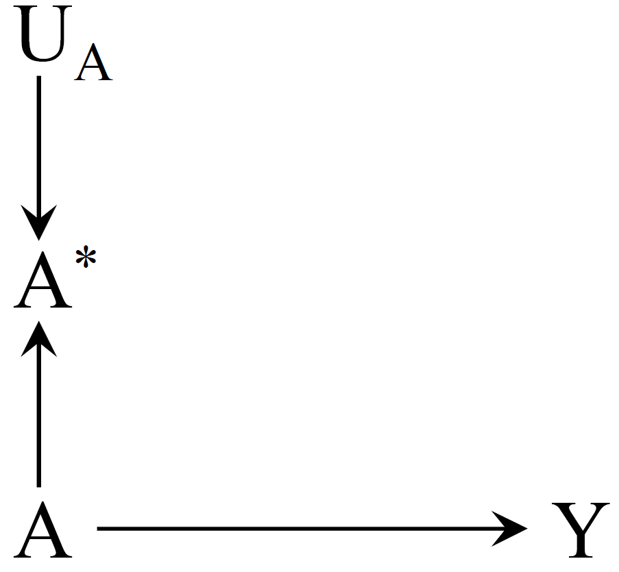
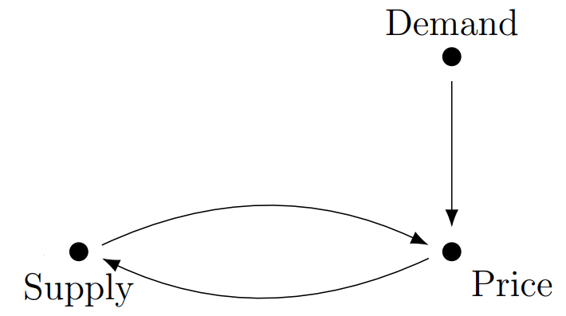
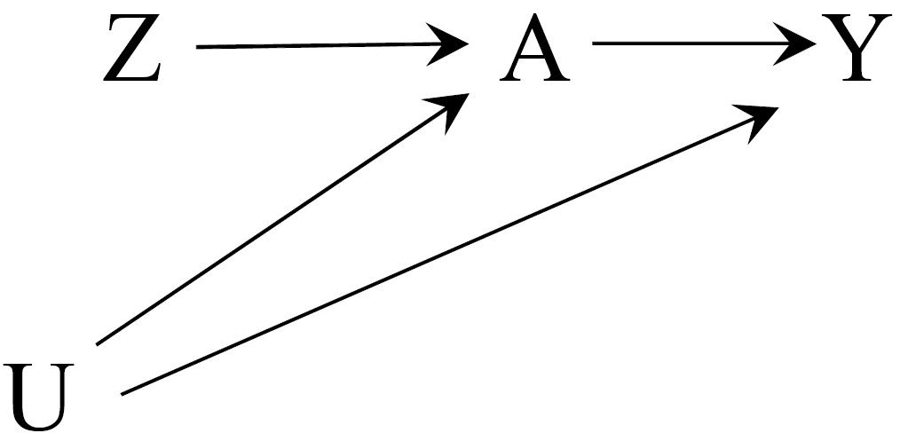
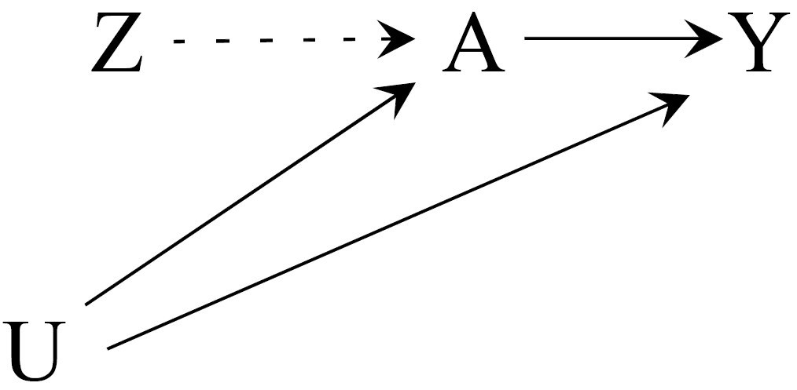
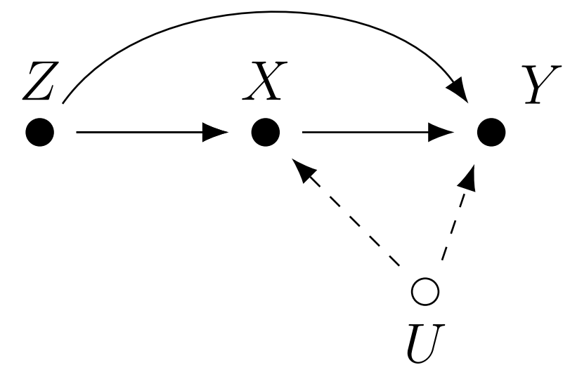
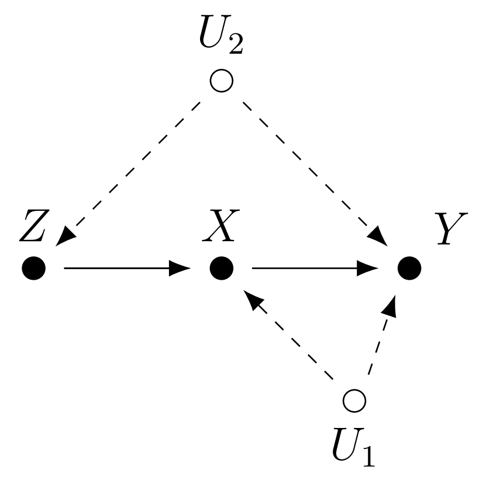
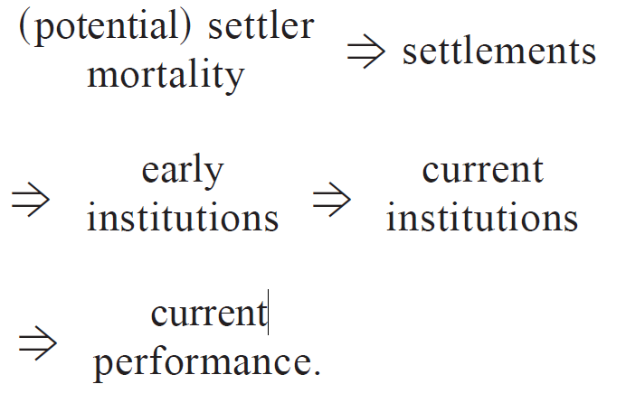
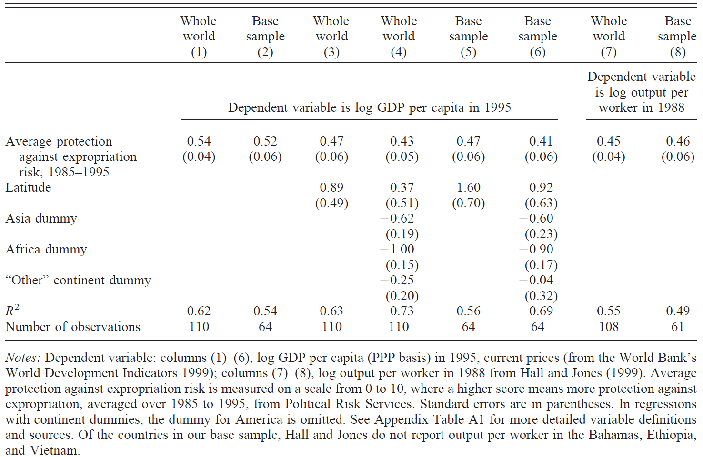
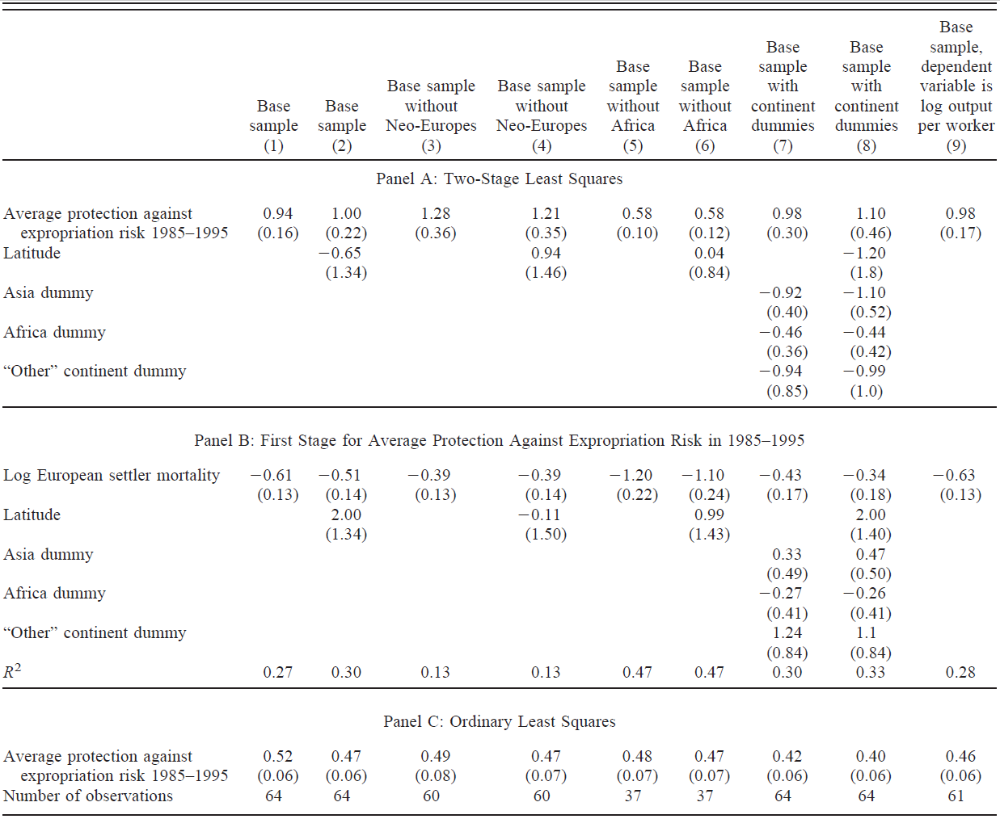

Instrumental Variable
Return to schooling and the Selection bias
Does more years of schooling cause higher wages?
What other methods can we use to compute the return to schooling?
Short Regression
\[ Y_i = \alpha^S + \rho^S s_i + \beta^S X_i + \varepsilon_i^S \tag{1.1}\]
- annual earning \(Y_i\)
- years of education \(s_i\)
- \(X_i\) vector of other control variables, such as experience.
Is the ceteris paribus fulfilled in Equation 1.1?
Is control for experience and education sufficient?
At a given experience/education level, are more- and less-educated workers equally able and diligent? (see Joshua D. Angrist & Pischke, 2014, Ch. 6)
Long Regression
\[ Y_i = \alpha + \rho s_i + \beta X_i + \gamma A^{'}_{i} + \varepsilon_i \tag{1.2}\]
where \(A^{'}_{i}\) is the ability variable that we desire to have in order to ensure the unbiased estimates of \(\rho\).
Omitting \(A^{'}_{i}\) causes a selection bias or endogeneity:
- \(\rho^{S} = \rho + \underbrace{\delta_{A^{'} s} \times \gamma}_{\text{ability bias}}\)
Endogeneity
Is another terminology for a selection bias!
Definition
- Consider following LONG and SHORT models:
\[ \begin{aligned} Y_i &= \alpha + \rho s_i + \beta X_i + \gamma A^{'}_{i} + \varepsilon_i , && \text{long}\\ Y_i &= \alpha^S + \rho^S s_i + \beta^S X_i + \varepsilon_i^S , && \text{short} \end{aligned} \]
\(s_i\) is the causal variable of interest (education)
\(A^{'}_{i}\) is the vector of control variables that we desire to have in order to ensure unbiased estimates of \(\rho\);
Variable \(s_i\) is endogenous if it correlates with the error terms \(\varepsilon^{S}_i\) :
\[ Cov(s_i, \varepsilon^{S}_i) \neq 0 \]
Endogeneity in practice:
variation in the independent variable \(s_i\) (education) is not “random” as compared to the variation in the dependent variable \(Y_i\), but
an external process \(U\) affects variation in both \(s_i\) and \(Y_i\);
thus, \(s_i\) is endogenous to \(Y_i\);

If variance of \(s_i\) is truly independent of \(Y_i\), \(s_i\) is exogenous.
Causes of endogeneity
Omitted Variable Bias (familiar)
Measurement Error
Simultaneity
OVB
Measurement error

Measurement error
We estimate a long model: \(Y_i = \alpha + \beta s^*_i + e_i\) ,
- but \(s^*_i\) is unavailable, we only have \(s_i = s^*_i + m_i\) instead,
- \(m_i\) is a systematic measurement error,
- \(E[m_i] =0\) and \(Cov(s^*_i, m_i) = Cov(e_i, m_i) = 0\).
Desired coefficient \(\beta = \frac{Cov(Y_i, s_i)}{Var(s_i)}\)
But with the erroneous data, we estimate biased coefficient \(\beta_b\)
\[ \begin{aligned} \beta_b & = \frac{Cov(Y_i, s_i)}{Var(s_i)} = \frac{Cov(a+\beta s^*_i + e_i, s^*_i + m_i)}{Var(s_i)} \\ & = \frac{\beta \cdot Cov(s^*_i, s^*_i)}{Var(s_i)} = \beta \frac{Var(s^{*}_i)}{Var(s_i)} \end{aligned} \]
- (see Joshua D. Angrist & Pischke, 2014, Ch. 6)
Simultaneity

Simultaneity
Simultaneity occurs if at least two variables are jointly determined.
- A typical case is when observed outcomes are the result of separate behavioral mechanisms that are coordinated in an equilibrium.
The prototypical case is a system of demand and supply equations:
- \(D(p)\) = how high would demand be if the price was set to \(p\)?
- \(S(p)\) = how high would supply be if the price was set to \(p\)?
Number of police people and the crime rate.
(see M. J. Wooldridge, 2020, Ch. 17) for more details on the problem and solutions.
IV - one of the solutions to endogeneity
IV stands for Instrumental Variable
Instrumental Variable
is another variable \(Z_i\) that affects only endogenous regressor \(s_i\) and satisfies:

Relevance condition:
Exclusion restriction:
Independence assumption:
(see Joshua D. Angrist & Pischke, 2014 Ch. 3 and 6; Joshua D. Angrist & Pischke, 2009, Ch. 4.; Hernán & Robins, 2020, Ch. 16; J. M. Wooldridge, 2010, Ch. 8; Söderbom, Teal, & Eberhardt, 2014, Ch. 11; Imbens, 2020)
1. Relevance condition:
- \(Z_i\) has a causal effect on \(s_i\);
Violation of the relevance condition: 
2. Exclusion restriction:
- \(Z_i\) does not affect \(Y_i\) directly, except through its potential effect on \(s_i\);
Violation of the exclusion restriction: 
3. Independence assumption:
- \(Z_i\) is randomly assigned or “as good as randomly assigned”, the same as
- \(Z_i\) is unrelated to the omitted variables \(A^{'}_i\), same as
- \(Z_i\) and \(Y_i\) do not share any common causes
Violation of the independence assumption: 
IV regression algorithm using 2SLS (1)
Stage 1: regress endogenous variable \(s_i\) on all \(X_i\) plus the instrument \(Z_i\)
\[ s_i = \pi_0 + \pi_1 Z_i + \rho X_i + \nu_i \]
Compute fitted values form the stage 1: \(\hat s_i = \pi_0 + \pi_1 Z_i + \rho X_i\).
Substitute \(s_i\) with the \(\hat{s_i}\) from the stage 1.
Stage 2: \(Y_i = \alpha^{IV} + \rho^{IV} \hat{s_i} + \beta^{IV} X_i + \varepsilon^{IV}_i\)
where
\(\hat{s_i}\) are the fitted values from the first stage
\(\rho^{IV}\) is the causal effect of interest from stage two that is asymptotically equal to \(\rho\) , the true effect of interest (\(\rho^{IV} \asymp \rho\))
Wage and Education (again)
Wage and Education (again)
\[ Y_i = \alpha^S + \rho^S s_i + \beta^S X_i + \varepsilon_i^S \]
We know that estimate of years of education \(s_i\) is biased because of the OVB (ability bias).
Think of an RCT experiment that could help to estimate true causal effect of \(s_i\) on income!
What instrument \(Z_i\) can we use for education?
Fantastic IVs and how to find them…
Use theory!
- human capital theory suggests that people make schooling choices by comparing the costs and benefits of alternatives.
Think and speculate:
What is the ideal experiment that could capture the effect of schooling on education?
What are the forces you’d like to manipulate and the factors you’d like to hold constant?
What are the other processes that are independent of wage, but may affect schooling?
Analyze, what were/are the policies/environments that could mimic the experimental setting?
Fantastic IVs for education
Loan policies or other subsidies that vary independently of ability or earnings potential
Region and time variation in school construction (Duflo, 2001)
Proximity to college(Card, 1994)
Quarter of birth (Joshua D. Angrist & Krueger, 1991)
Parents education (Buckles & Hungerman, 2013)
Number of siblings
Using parents education as the IV for education
Show the code
Rows: 935 Columns: 17
── Column specification ────────────────────────────────────────────────────────
Delimiter: ","
dbl (17): wage, hours, IQ, KWW, educ, exper, tenure, age, married, black, so...
ℹ Use `spec()` to retrieve the full column specification for this data.
ℹ Specify the column types or set `show_col_types = FALSE` to quiet this message.Rows: 722
Columns: 19
$ wage <dbl> 769, 808, 825, 650, 562, 600, 1154, 1000, 930, 900, 1318, …
$ hours <dbl> 40, 50, 40, 40, 40, 40, 45, 40, 43, 45, 38, 40, 50, 45, 40…
$ IQ <dbl> 93, 119, 108, 96, 74, 91, 111, 95, 132, 125, 119, 118, 105…
$ KWW <dbl> 35, 41, 46, 32, 27, 24, 37, 44, 44, 40, 24, 47, 37, 39, 36…
$ educ <dbl> 12, 18, 14, 12, 11, 10, 15, 12, 18, 15, 16, 16, 10, 15, 11…
$ exper <dbl> 11, 11, 11, 13, 14, 13, 13, 16, 8, 4, 7, 9, 17, 6, 19, 10,…
$ tenure <dbl> 2, 16, 9, 7, 5, 0, 1, 16, 13, 3, 2, 9, 2, 9, 10, 4, 3, 8, …
$ age <dbl> 31, 37, 33, 32, 34, 30, 36, 36, 38, 30, 28, 34, 35, 36, 38…
$ married <dbl> 1, 1, 1, 1, 1, 0, 1, 1, 1, 0, 1, 1, 1, 1, 1, 1, 1, 1, 1, 1…
$ black <dbl> 0, 0, 0, 0, 0, 0, 0, 0, 0, 0, 0, 0, 0, 0, 0, 0, 0, 0, 0, 0…
$ south <dbl> 0, 0, 0, 0, 0, 0, 0, 0, 0, 0, 0, 0, 0, 0, 0, 0, 0, 0, 0, 0…
$ urban <dbl> 1, 1, 1, 1, 1, 1, 0, 1, 0, 0, 1, 1, 1, 1, 1, 1, 1, 1, 1, 1…
$ sibs <dbl> 1, 1, 1, 4, 10, 1, 2, 1, 1, 2, 3, 1, 1, 3, 2, 2, 5, 2, 0, …
$ brthord <dbl> 2, NA, 2, 3, 6, 2, 3, 1, 1, NA, 1, 1, 2, 3, 3, 1, 1, 1, 1,…
$ meduc <dbl> 8, 14, 14, 12, 6, 8, 14, 12, 13, 12, 10, 12, 6, 12, 10, 12…
$ feduc <dbl> 8, 14, 14, 12, 11, 8, 5, 11, 14, 12, 10, 12, 8, 10, 8, 12,…
$ lwage <dbl> 6.645091, 6.694562, 6.715384, 6.476973, 6.331502, 6.396930…
$ lwagehour <dbl> 2.956212, 2.782539, 3.026504, 2.788093, 2.642622, 2.708050…
$ parents_edu <dbl> 16, 28, 28, 24, 17, 16, 19, 23, 27, 24, 20, 24, 14, 22, 18…Estimating IV manually
Show the code
# No IV
ols <- lm(log(wage) ~ educ + exper + I(exper^2), data = dta)
# No IV but with controls for IQ
ols_iq <- lm(log(wage) ~ educ + exper + I(exper^2) + IQ, data = dta)
# First stage
first_stage <- lm(educ ~ parents_edu + exper + I(exper^2), data = dta)
# Fitted values of endogenous regressor
dta_fitted <- dta %>% mutate(educ_fit = fitted(first_stage))
# Second stage
second_stage <- lm(log(wage) ~ educ_fit + exper + I(exper^2), data = dta_fitted)Show the code
modelsummary(
list(`OLS` = ols, `OLS (with ability proxi)` = ols_iq,
`1 stage (par. educ.)` = first_stage,
`2 stage (par. educ.)` = second_stage),
fmt = "%.3f",
estimate = "{estimate}{stars} ({std.error})",
statistic = NULL,
coef_map = c(
"educ" = "Education",
"educ_fit" = "Education",
"parents_edu" = "Parents educ.",
"exper" = "Experience",
"I(exper^2)" = "Experience sq.",
"IQ" = "Ability proxi"
),
gof_omit = "AIC|BIC|RMSE"
)| OLS | OLS (with ability proxi) | 1 stage (par. educ.) | 2 stage (par. educ.) | |
|---|---|---|---|---|
| Education | 0.078*** (0.007) | 0.058*** (0.008) | 0.146*** (0.019) | |
| Parents educ. | 0.148*** (0.013) | |||
| Experience | 0.009 (0.015) | 0.010 (0.015) | −0.021 (0.072) | 0.008 (0.016) |
| Experience sq. | 0.001 (0.001) | 0.001 (0.001) | −0.007* (0.003) | 0.001+ (0.001) |
| Ability proxi | 0.006*** (0.001) | |||
| Num.Obs. | 722 | 722 | 722 | 722 |
| R2 | 0.141 | 0.169 | 0.326 | 0.076 |
| R2 Adj. | 0.137 | 0.164 | 0.323 | 0.072 |
| Log.Lik. | −341.745 | −329.737 | −1462.726 | −368.199 |
| F | 39.259 | 36.461 | 115.813 | 19.574 |
Using siblings number as the IV for education
Show the code
modelsummary(
list(`OLS` = ols, `OLS (with ability proxi)` = ols_iq,
`1 stage (par. educ.)` = first_stage,
`2 stage (par. educ.)` = second_stage,
`2 stage (siblings)` = iv_fit2),
fmt = "%.3f",
estimate = "{estimate}{stars} ({std.error})",
statistic = NULL,
coef_map = c(
"educ" = "Education",
"educ_fit" = "Education",
"parents_edu" = "Parents educ.",
"exper" = "Experience",
"I(exper^2)" = "Experience sq.",
"IQ" = "Ability proxi"
),
gof_omit = "AIC|BIC|RMSE"
)| OLS | OLS (with ability proxi) | 1 stage (par. educ.) | 2 stage (par. educ.) | 2 stage (siblings) | |
|---|---|---|---|---|---|
| Education | 0.078*** (0.007) | 0.058*** (0.008) | 0.146*** (0.019) | 0.128*** (0.033) | |
| Parents educ. | 0.148*** (0.013) | ||||
| Experience | 0.009 (0.015) | 0.010 (0.015) | −0.021 (0.072) | 0.008 (0.016) | 0.008 (0.016) |
| Experience sq. | 0.001 (0.001) | 0.001 (0.001) | −0.007* (0.003) | 0.001+ (0.001) | 0.001 (0.001) |
| Ability proxi | 0.006*** (0.001) | ||||
| Num.Obs. | 722 | 722 | 722 | 722 | 722 |
| R2 | 0.141 | 0.169 | 0.326 | 0.076 | 0.085 |
| R2 Adj. | 0.137 | 0.164 | 0.323 | 0.072 | 0.081 |
| Log.Lik. | −341.745 | −329.737 | −1462.726 | −368.199 | |
| F | 39.259 | 36.461 | 115.813 | 19.574 |
Pitfalls of the IV
Consistency and unbiasedness
IV estimates are not unbiased, but they are consistent (Joshua D. Angrist & Krueger, 2001).
Unbiasedness means the estimator has a sampling distribution centered on the parameter of interest in a sample of any size, while
Consistency only means that the estimator converges to the population parameter as the sample size grows.
Researchers that use IV should aspire to work with large samples.
- No statistical tests is available for checking consistency
Bad instruments (1)
- \(Z_i\) that does not satisfy any of the Relevance condition, Exclusion restriction and Independence assumption;
Bad instruments (2)
- \(Z_i\) that correlate with omitted variable (OV) but do not cause changes in it or inflict simultaneity:
They result into much greater upwards shifting bias compare to the OLS;
For example the weather in Brazil and supply price and demand quantity of coffee:
weather shifts the supply curve, it is random, thus it seems as a plausible instrument for price in the demand model
the weather in Brazil determines supply expectations on futures exchange, thus, it also shifts the demand for coffee before the supply price is affected;
Bad instruments (3)
Weak instrument \(Z_i\):
When the instrument \(Z_i\) is only weakly correlates with endogenous regressor \(s_i\);
Find a better one!
Weak instrument test:
Run the first stage regression with and without the IV;
Compare the F-statistics
- If F-statistics with instrument is greater than that without by 5 of more,
- this is a sign of a strong instrument (Staiger & Stock, 1997);
This test does not ensure that our instruments are independent of omitted variable \(A^{'}_i\) or \(Y_i\);
Staiger & Stock (1997)
Overidentification (1)
number of instruments \(G\) exceeds the number of endogenous variables \(K\).
- when the IV is overidentified, estimates are biased;
- bias is proportional to \(K - G\);
- using fewer instruments therefore reduces bias;
If you have few candidates for IV and one endogenous regressor:
- select one IV for the first stage, and
- put the remaining instruments as controls into the second stage
Overidentification (2)
Sargan’s overidentification test:
\(H_0:Cov(Z^{'}_i,\varepsilon^{IV}_i)=0\) - the covariance between the instrument and the error term is zero
\(H_1:Cov(Z^{'}_i,\varepsilon^{IV}_i)\neq0\)
Thus, by rejecting the \(H_0\), we conclude that at least one of the instruments is not valid.
Wu-Hausman test for endogeneity
Wu-Hausman test for endogeneity tests if the variable that we are worried about is indeed endogenous.
\(H_0:Cov(s_i,\varepsilon_i)=0\) - the covariance between potentially endogenous variable and the error term is zero
\(H_1:Cov(s_i,\varepsilon_i) \neq 0\)
Thus, by rejecting the \(H_0\), we conclude that there is endogeneity and there might be a need for IV.
Example 1. The colonial origins of comparative development: An empirical investigation
(Acemoglu, Johnson, & Robinson, 2001). The colonial origins of comparative development: An empirical investigation. American economic review, 91(5), 1369-1401.
Research question and the problem
What are the fundamental causes of the large differences in income per capita across countries?
with better “institutions,” more secure property rights, and less distortionary policies,
- countries invest more in physical and human capital, and
- use these factors more efficiently to
- achieve a greater level of income.
Institutions are a likely cause of income growth.
Endogeneity problem
What could be the ideal experiment to find the effect of institutions on income?
Rich economies choose or can afford better institutions.
Economies that are different for a variety of reasons
- will differ both in their institutions and in their income per capita.
To estimate the impact of institutions on income,
- we need a source of exogenous variation in institutions.
Identification strategy
is the manner in which a researcher uses observational data (i.e., data not generated by a randomized trial) to approximate a real experiment (Joshua D. Angrist & Krueger, 1991)
Current performance is caused by
Current institutions, which are caused by
Early institutions, which are caused by
Settlements types during colonization, which are caused by
Settlers’ (potential) mortality or colonization risks.

Empirical model (OLS estimator)
\[ \begin{aligned} \log (\text{GDP per capita}_i) & = \beta_0 \\ & + \beta_1 \text{Proxy for institutions} \\ & + \gamma \text{Control variables} + \epsilon_i \end{aligned} \]
\(i\) is the country;
Dependent variable is the GDP per capita in 1995;
As the proxy of the institutional quality, authors used average protection against expropriation risk in 1985-1990 (index/country ranking);
Controls include latitude of the country and continent-specific dummy variables;
OLS estimation

Empirical model (IV estimator)
First stage:
\[ \begin{aligned} \text{Proxy for institutions} & = \beta_0 \\ & + \beta_1 \log (\text{Settlers mortality in 16-18th cent.}) \\ & + \gamma \text{Control variables} + e_i, \end{aligned} \]
- European settlers mortality in the 16-18th centuries is the precise number of how many settlers died in the country that they tried to colonize.
Second stage:
\[ \begin{aligned} \log (\text{GDP per capita}_i) & = \beta_0^{IV} \\ & + \beta_1^{IV} \widehat{ \text{Proxy for institutions}} \\ & + \gamma^{IV} \text{Control variables} + \epsilon_i^{IV}, \end{aligned} \]
- \(\widehat{ \{ \text{Proxy for institutions} \}}\) are fitted values from the first stage.
IV results
